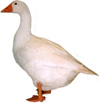

Friday, November the 18th, 2011
back to: title, date or indexes
At The Dabbler this week, I examine in piercing detail the phrase “saying Boo! to a goose”, and suggest that it is high time it was replaced by something more apposite. To assist readers in gaining a full understanding of what I am talking about, I append a video of some ill-tempered geese, taken by legendary independent film maker Ned Ouwell. There is no evidence that the geese in the video have actually had “Boo!” said to them, so to get the utmost benefit, it is a good idea to shout “Boo!” at your computer screen just before you click the directional pointing device to play the clip. If you are not sure what precisely a goose is, here is a picture of one:
